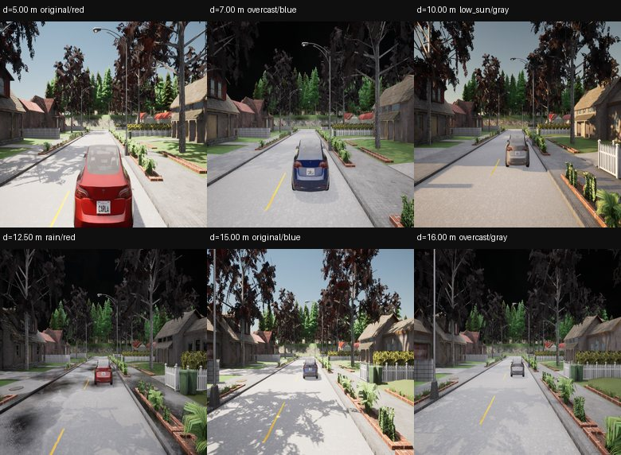
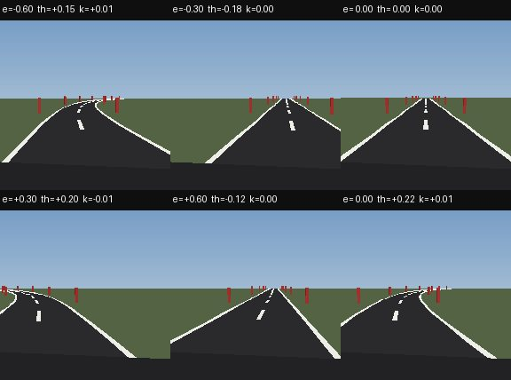
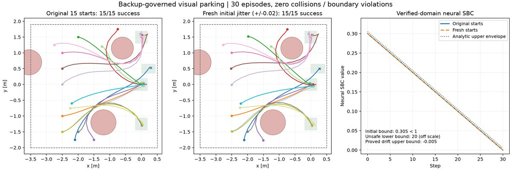

SPVC 实验总览
真实图像前端、低维观测、CP 包络与非负 SBC：四个实验的配置、步骤、结果与边界。
AEBS：条件证书车道：证书通过停车场：受保护闭环证书机器人：任务跑通 / 证书未通过
这个站点把当前 SPVC 改进实验放在一起：每个实验的配置、逐步输入/输出、结果、保证边界和精选图片。原始 24k/3.6k 图片不复制，只放缩略图和完整包链接。
AEBS · 真实 RGB 紧急制动
24,000 张 640×640 CARLA RGB；DINO 距离观测；冻结回放 CP；新非负 SBC。
0.4184 m 轨迹 CP
292,024 区间 · 0 见证/0 未解决 · 4,800/4,800 行为

车道 · 2D 视觉保持
192×192 渲染图；patch-DINO (ê,θ̂)；轨迹 CP；学习式非负 SBC。
0.09009 归一化 CP
199/100 轨迹 · 95/100 全程覆盖 · SBC 0/0

停车场 · 三维视觉绕障
4D 车辆、3D 视觉观测、在线后备；15 个起点组启动 CP。
30/30 图像仿真
启动审计 233/240 · 增广可达域神经 SBC

移动机器人 · 三维视觉
3D 位姿、双动作、120 步；DINO 三维观测。
24/24 图像闭环
CP 已算；SBC 未通过；CP 盒内 28/32 反例

前端误差对比（AEBS，同一 4,920 张 test）
| 前端 | test MAE ↓ | CP95 半径 ↓ | test 覆盖 ↑ |
|---|---|---|---|
| 原 SPVC cGAN + state_net（旧检查点） | 2.747 m | 5.221 m | 87.64% |
| 32×32 灰度 DINO（同数据） | 0.1017 m | 0.2656 m | 90.47% |
| 真实 RGB DINO（当前） | 0.0874 m | 0.2307 m | 93.33% |
cGAN 行是旧 400 图检查点直接应用到新 test，不是同预算重训；灰度 vs 真实 RGB 是受控表示对比。
详细过程
实验过程页 按“输入 → 做了什么 → 输出/产物 → 为什么/检查”逐步展开 AEBS、车道、停车场、移动机器人；不是只列结果数字。
统一安全标准
非负 SBC `B≥0`；初始 `B≤1`；危险 `B≥20`；允许观测集合内 `B(next)≤B(current)`。满足时给出停止过程风险上界 `B0/20≤5%`。这是条件模型保证，不是新图像/实车/无条件 95%。
最新修复：AEBS 旧 0.2307 m 的 tube 通过结论因单位漏乘已撤回；当前主结果是 0.418359 m 轨迹 CP + 新 SBC。历史文档保留在 归档。